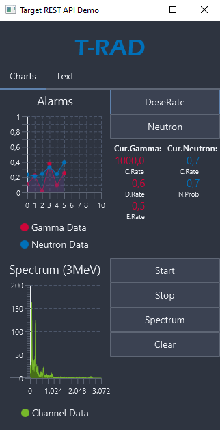
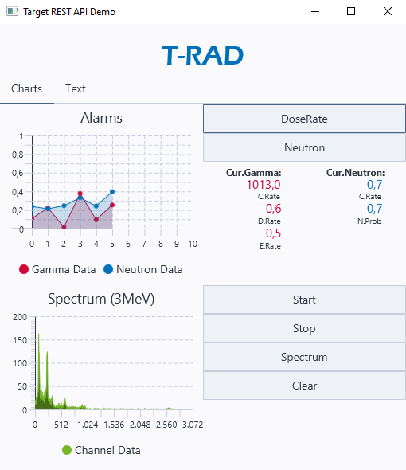
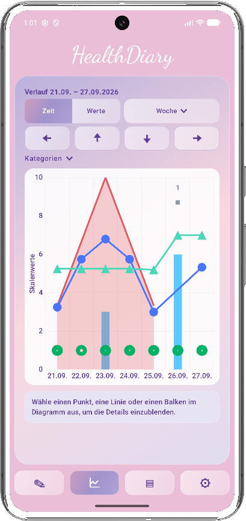
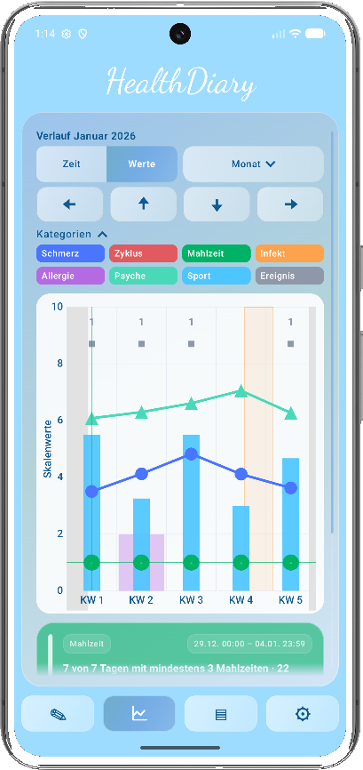
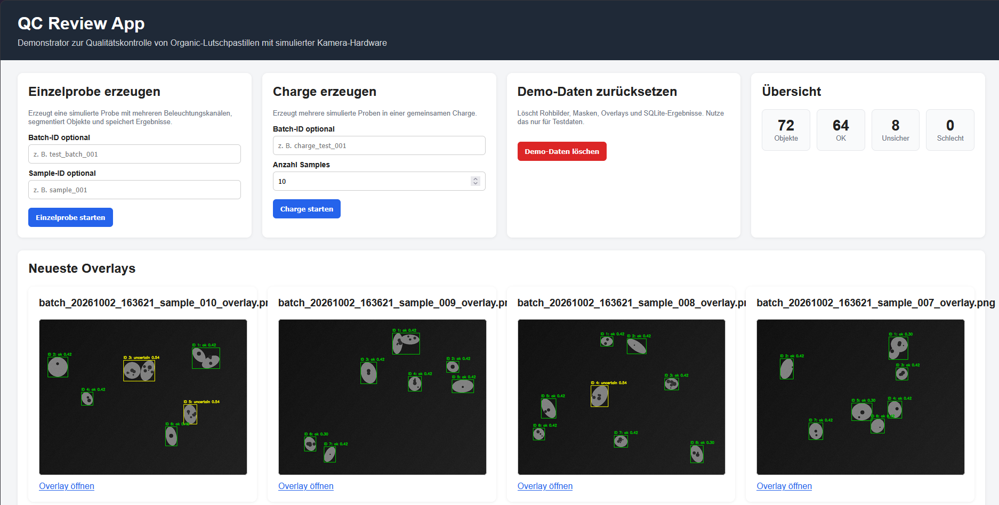
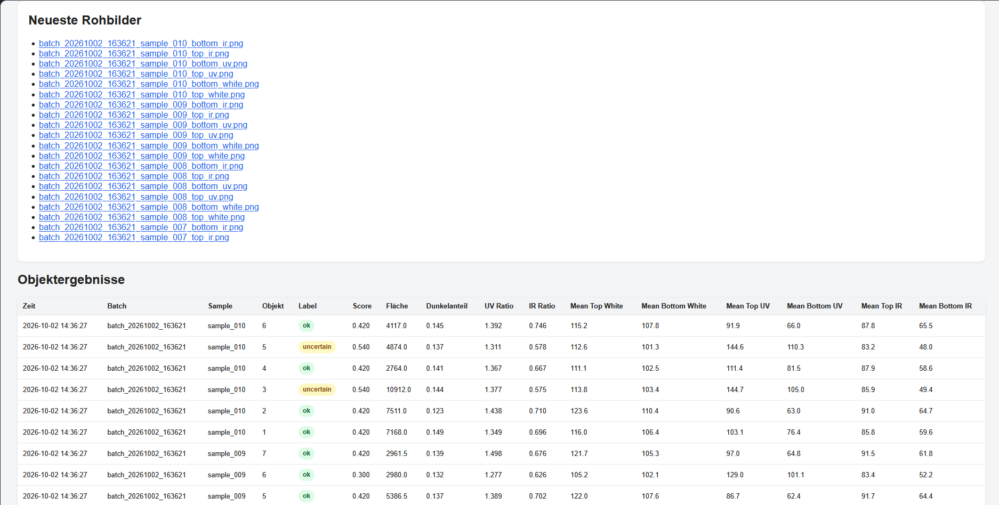
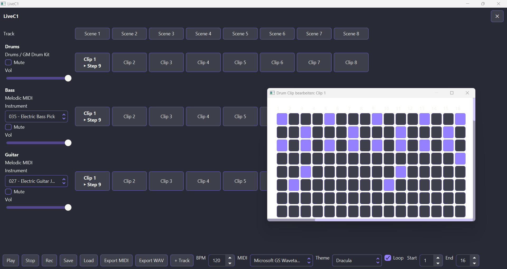
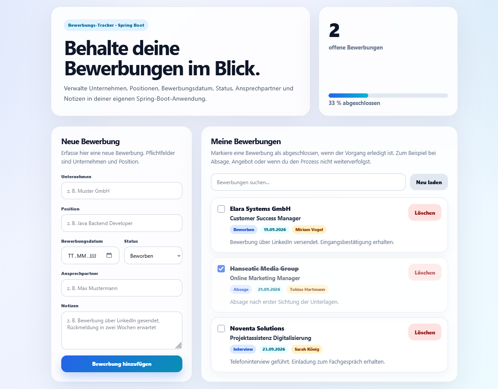

Fachinformatiker für Anwendungsentwicklung
Ausgewählte Softwareprojekte
Desktop-Prototyp für eine Messgeräte-API
Browserunabhängige JavaFX-Anwendung zur Demonstration einer REST-Schnittstelle für Messgeräte im Bereich radioaktiver Strahlung.
Die Anwendung kommuniziert über HTTP mit einer gerätespezifischen REST-API, verarbeitet strukturierte Antworten und stellt Mess- sowie Statusinformationen sowohl in Textform als auch grafisch dar. Für ausgewählte Messwerte wurden periodische Live-Abfragen umgesetzt. Steuernde API-Aufrufe ermöglichen unter anderem das Starten und Stoppen von Messfunktionen.
Die Oberfläche wurde mit JavaFX und FXML in mehrere funktionale Ansichten gegliedert. Das Projekt diente dazu, Kunden und Interessenten die Nutzungsmöglichkeiten einer bestehenden Geräteschnittstelle anschaulich zu demonstrieren.
Die Darstellung basiert auf dem Projektstand zum Zeitpunkt des Ausbildungsabschlusses.


Android-Gesundheitstagebuch
Lokale Android-Anwendung zur strukturierten Erfassung und grafischen Auswertung persönlicher Gesundheitsinformationen.
Die Benutzeroberfläche entsteht mit Kotlin und Jetpack Compose. Unterschiedliche Eintragstypen können erfasst, validiert und in einer gemeinsamen Verlaufsansicht ausgewertet werden. Ein besonderer Schwerpunkt liegt auf interaktiven Diagrammen für Tages-, Wochen-, Monats- und Jahreszeiträume sowie auf der dazugehörigen Navigations- und Aggregationslogik.
Die Daten bleiben lokal auf dem Gerät. Room übernimmt die Datenhaltung. Die Datenbank wird mit SQLCipher verschlüsselt und der Schlüssel gerätegebunden über den Android Keystore geschützt. Ergänzend existiert ein optionaler PIN-Schutz. Zentrale Logikbereiche werden durch automatisierte Unit-Tests abgesichert.
Kernfunktionen sind bereits umgesetzt. Weitere Auswertungs- und Komfortfunktionen werden schrittweise ergänzt.


Bildbasierte Qualitätskontrolle
Python-Weblösung zur prototypischen Qualitätskontrolle von Organic-Lutschpastillen mittels Bildverarbeitung.
Die Verarbeitung bildet den Ablauf von Aufnahme, Segmentierung und Merkmalsberechnung bis zur regelbasierten Qualitätsbewertung und visuellen Ergebnisdarstellung ab. OpenCV erkennt und segmentiert Produktproben. Aus verschiedenen Bildmerkmalen entsteht eine Einstufung in „OK“, „Unsicher“ oder „Schlecht“. Ergebnisse und Metadaten werden in SQLite gespeichert und über eine FastAPI-Weboberfläche dargestellt.
Da im Prototyp keine reale Kamera- und Beleuchtungshardware zur Verfügung stand, erzeugt eine austauschbare Simulationsschicht reproduzierbare Aufnahmen unter mehreren simulierten Beleuchtungssituationen. Die Architektur ist darauf ausgelegt, diese Schicht später durch reale Hardwareanbindung zu ersetzen.
Funktionsfähiger Demonstrator mit simulierter Aufnahme- und Beleuchtungshardware. Eine reale Hardwareanbindung ist als mögliche Weiterentwicklung vorgesehen.


LiveC1 · MIDI-Sequencer
JavaFX-Desktopanwendung zur Steuerung von MIDI-fähigen Softwareinstrumenten und zur Erstellung clipbasierter Step-Sequenzen.
Mehrere MIDI-Spuren können mit eigenen Kanälen und General-MIDI-Instrumenten angelegt und über 16-Step-Clips programmiert werden. Eine eigene Sequencer-Logik übernimmt Timing, BPM-Steuerung, Loopbereiche und synchronisiertes Umschalten zwischen Clips. Projekte lassen sich als JSON speichern und laden. Sequenzen können als MIDI-Dateien und über einen einfachen internen Renderer als WAV-Vorschau exportiert werden.
Funktionsfähiger Prototyp. Weitere Bedienungs- und Detailoptimierungen sind geplant.

Bewerbungstracker
Spring-Boot-Webanwendung zur strukturierten Verwaltung von Bewerbungsprozessen.
Das Backend ist als REST-API mit getrennter Controller-, Service- und Repository-Schicht umgesetzt. Die Webanwendung wird über den in Spring Boot eingebetteten Tomcat-Server bereitgestellt. Bewerbungen können erfasst, gesucht, abgeschlossen und gelöscht werden. Serverseitige Validierung, DTOs und eine zentrale Fehlerbehandlung sorgen für klar definierte Schnittstellenantworten. Ein schlankes Frontend mit HTML, CSS und JavaScript kommuniziert per Fetch API mit dem Backend.
Der aktuelle Prototyp nutzt H2. Eine dauerhafte Datenbankanbindung ist als nächster Ausbau vorgesehen.
